REAL H200 EXPERIMENT · LEFFA · VITON-HD · 28 SEP 2026
Can a training step point to garment details?
The gradient path works; the full success criteria were not met.One sampled-timestep LeFFA forward → component heatmap + decoded x₀ estimate → frozen DINO crops → gradients to real LeFFA Q/K projections and learned component keys. No live Molmo and no multi-step sampling.
These are single-step estimates from noised paired target images during training, not fully sampled try-on results. LeFFA disables text cross-attention, so this experiment adds semantic keys to its live image-attention query features. It does not claim native collar/cuff text-token attention.
Measured result
1,000 updates across two matched arms; 0 OOMs. 24 optimization images, 8 garment-separated validation images. All held-out cases appear below, ordered by DINO change versus control.
| Arm | Collar mass | Left sleeve mass | Right sleeve mass | Fixed crop DINO ↓ | Pointed crop DINO ↓ |
|---|
| Initial LeFFA | 2.6% | 1.5% | 1.4% | 0.2657 | 0.6837 |
| Localization control | 68.3% | 51.0% | 55.9% | 0.2625 | 0.3534 |
| Localization + DINO | 67.5% | 50.5% | 54.1% | 0.2639 | 0.3487 |
Mass is measured at t=.5. DINO averages all annotated regions at seven held-out timesteps. Paired image bootstrap: DINO − control fixed-crop distance +0.00061; descriptive 95% interval [-0.00088, +0.00212], only 8 images. Negative means improvement.
| Fixed-crop DINO by component ↓ | Initial | Control | Joint | Joint − control |
|---|
| Collar / neckline | 0.1884 | 0.1869 | 0.1883 | +0.0014 |
| Left sleeve end | 0.3652 | 0.3742 | 0.3777 | +0.0035 |
| Right sleeve end | 0.3720 | 0.3526 | 0.3519 | -0.0007 |
Each component average covers the seven timestep evaluations. Only three validation images have sleeve-end annotations. Negative deltas favor DINO training.
Checkpoint audit confirmed updates to all four Q/K matrices (1,024,000 weights). The readout adds 2,880 trainable component-key weights. Median joint update: 0.330 s; peak allocated CUDA memory: 8.41 GiB. Inspect optimizer and weight-update evidence.
Criterion-by-criterion checks
| localization over 80pct each component at half | NOT MET |
| fixed roi dino improves over initial | PASS |
| fixed roi dino improves over matched control | NOT MET |
| pointed roi dino improves over matched control | PASS |
| dino gradient path verified | PASS |
| completed at least 1000 iterations without oom | PASS |
What was trained
Both arms start from the same pretrained LeFFA and random semantic keys, use the same image order, uniform timesteps and noise seeds, and update two existing up-block Q/K projections. Control: epsilon MSE + 5 × spatial mass loss. Joint: control + 0.1 × DINO cosine distance. Each arm runs 500 updates. DINO is frozen; predicted RGB crops keep gradients through DINO and the frozen VAE. The DINO loss weights fixed-site crops by 50% and attention-centered crops by 50%. Attention head aggregation: mean_probs.
Annotations are cached automatic MolmoPoint proposals, not human ground truth. They are supervision only; no boxes enter the localization logits. Crop widths and heights come from metadata: this tests learning component centers, not learning full extents. Collar includes neckline and cuff includes a short sleeve end. The cohort is a small feasibility experiment, not a full VITON-HD benchmark.
Every held-out example
Open a component row for matched detail crops and initial/control/DINO heatmaps. A lower DINO number is a feature-space change, not a guarantee that a visible defect was fixed.
03753_00 DINO − control: -0.0131 at t=.5
 Garment condition
Garment condition Real target
Real target Initial single-step estimate
Initial single-step estimate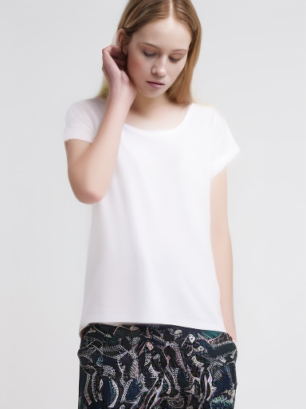
Localization control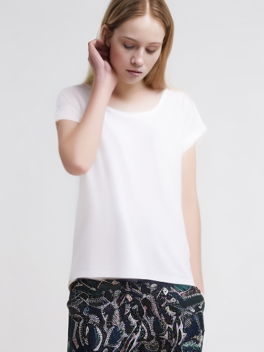
Localization + DINOCollar / neckline · mass 1.4% → 89.7% · fixed-crop distance 0.2028 → 0.1989
Exact same region in every image
 Real target crop
Real target crop Initial LeFFA
Initial LeFFA
distance 0.2028Localization control
distance 0.2165Localization + DINO
distance 0.1989Where the readout points
Cyan: automatic target box. Yellow: attention-centered crop. Heat colors are normalized per map for visibility; numeric mass is the quantitative comparison.
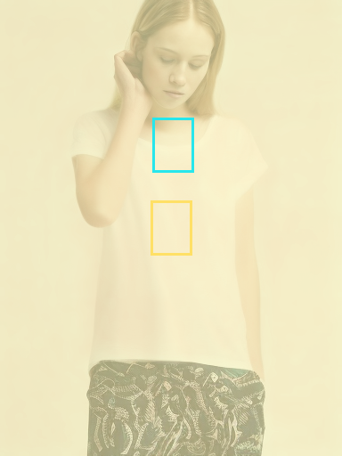
Initial LeFFA
box mass 1.4%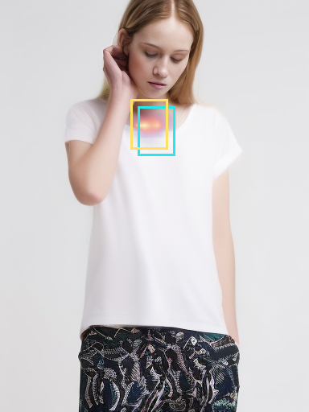
Localization control
box mass 89.0%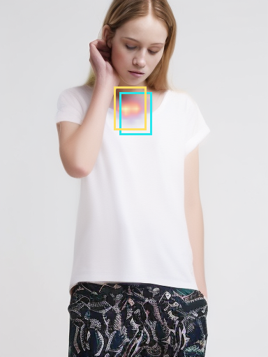
Localization + DINO
box mass 89.7%Left sleeve end · mass 1.4% → 61.6% · fixed-crop distance 0.1512 → 0.1534
Exact same region in every image
Real target crop Initial LeFFA
Initial LeFFA
distance 0.1512Localization control
distance 0.1559Localization + DINO
distance 0.1534 Where the readout points
Cyan: automatic target box. Yellow: attention-centered crop. Heat colors are normalized per map for visibility; numeric mass is the quantitative comparison.
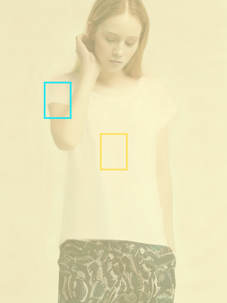
Initial LeFFA
box mass 1.4%Localization control
box mass 62.3%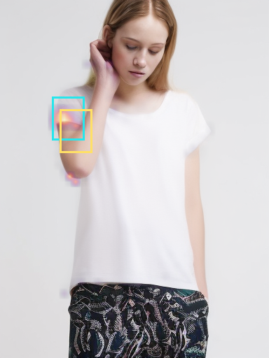
Localization + DINO
box mass 61.6%Right sleeve end · mass 1.4% → 64.8% · fixed-crop distance 0.3347 → 0.2845
Exact same region in every image
 Real target crop
Real target crop Initial LeFFA
Initial LeFFA
distance 0.3347Localization control
distance 0.3037Localization + DINO
distance 0.2845Where the readout points
Cyan: automatic target box. Yellow: attention-centered crop. Heat colors are normalized per map for visibility; numeric mass is the quantitative comparison.
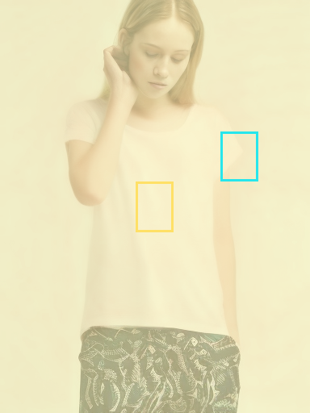
Initial LeFFA
box mass 1.4%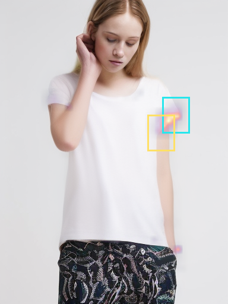
Localization control
box mass 66.5%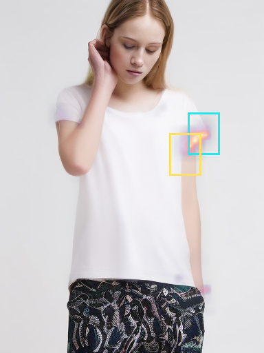
Localization + DINO
box mass 64.8%07735_00 DINO − control: -0.0124 at t=.5
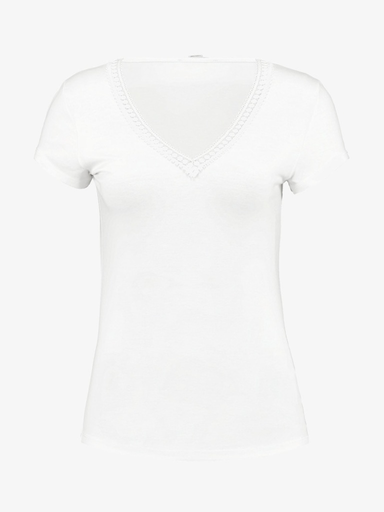
Garment condition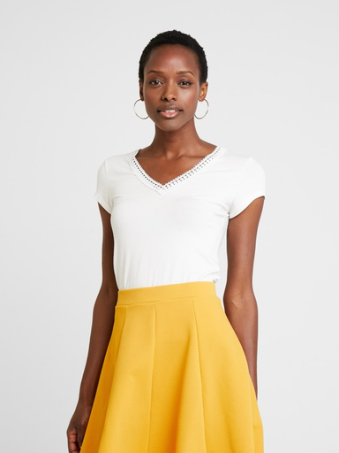
Real target Initial single-step estimate
Initial single-step estimate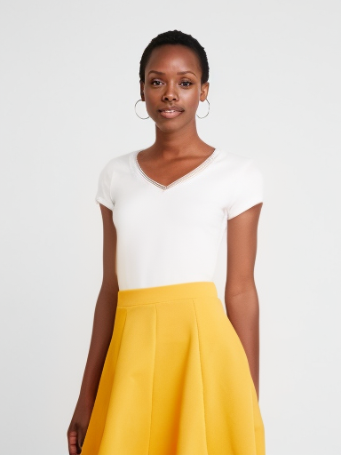
Localization controlLocalization + DINOCollar / neckline · mass 1.4% → 60.1% · fixed-crop distance 0.1446 → 0.1457
Exact same region in every image
 Real target crop
Real target crop Initial LeFFA
Initial LeFFA
distance 0.1446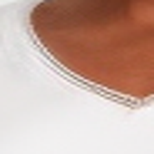
Localization control
distance 0.1581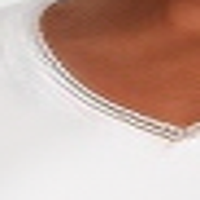
Localization + DINO
distance 0.1457Where the readout points
Cyan: automatic target box. Yellow: attention-centered crop. Heat colors are normalized per map for visibility; numeric mass is the quantitative comparison.
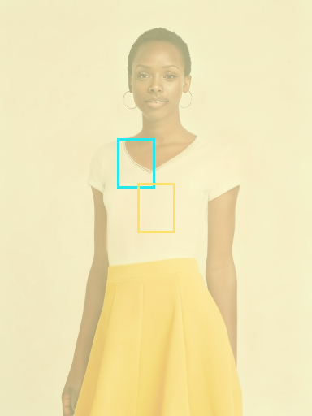
Initial LeFFA
box mass 1.4%Localization control
box mass 61.3%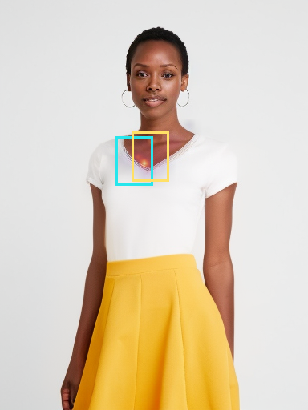
Localization + DINO
box mass 60.1%02993_00 DINO − control: -0.0049 at t=.5
Collar / neckline · mass 5.4% → 41.7% · fixed-crop distance 0.1262 → 0.1284
Exact same region in every image
 Real target crop
Real target crop Initial LeFFA
Initial LeFFA
distance 0.1262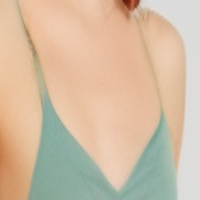
Localization control
distance 0.1333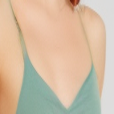
Localization + DINO
distance 0.1284Where the readout points
Cyan: automatic target box. Yellow: attention-centered crop. Heat colors are normalized per map for visibility; numeric mass is the quantitative comparison.
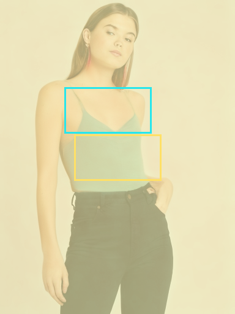
Initial LeFFA
box mass 5.4%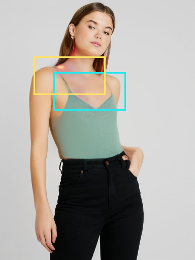
Localization control
box mass 40.4%Localization + DINO
box mass 41.7%10337_00 DINO − control: -0.0048 at t=.5
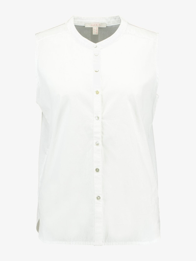
Garment condition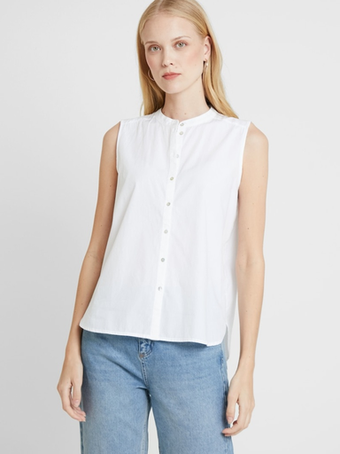
Real targetInitial single-step estimateLocalization control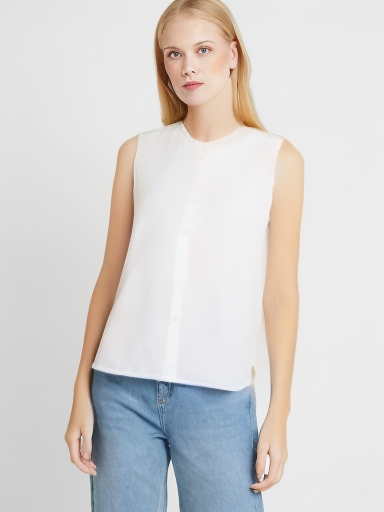
Localization + DINOCollar / neckline · mass 1.5% → 39.1% · fixed-crop distance 0.1459 → 0.1629
Exact same region in every image
 Real target crop
Real target crop Initial LeFFA
Initial LeFFA
distance 0.1459Localization control
distance 0.1677Localization + DINO
distance 0.1629Where the readout points
Cyan: automatic target box. Yellow: attention-centered crop. Heat colors are normalized per map for visibility; numeric mass is the quantitative comparison.
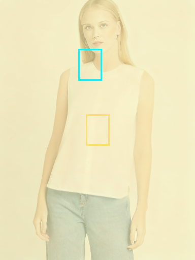
Initial LeFFA
box mass 1.5%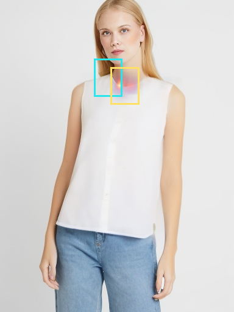
Localization control
box mass 42.9%Localization + DINO
box mass 39.1%10215_00 DINO − control: -0.0022 at t=.5
 Garment condition
Garment condition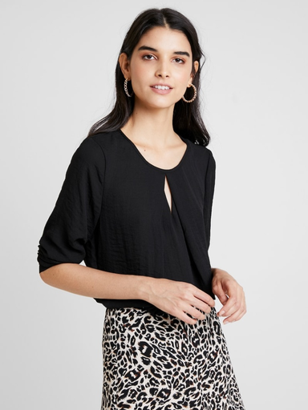
Real target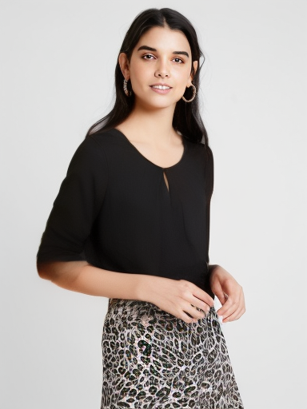
Initial single-step estimate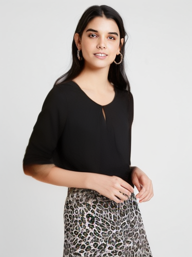
Localization control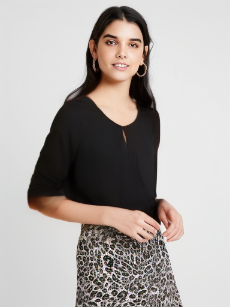
Localization + DINOCollar / neckline · mass 4.0% → 96.6% · fixed-crop distance 0.1349 → 0.1381
Exact same region in every image
 Real target crop
Real target crop Initial LeFFA
Initial LeFFA
distance 0.1349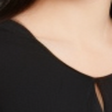
Localization control
distance 0.1403Localization + DINO
distance 0.1381Where the readout points
Cyan: automatic target box. Yellow: attention-centered crop. Heat colors are normalized per map for visibility; numeric mass is the quantitative comparison.
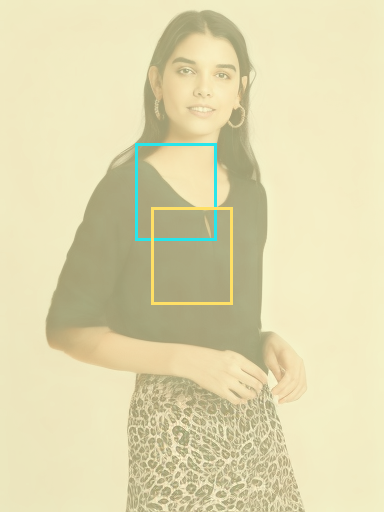
Initial LeFFA
box mass 4.0%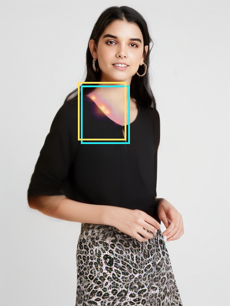
Localization control
box mass 96.1%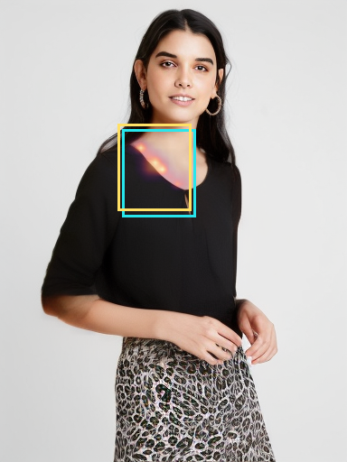
Localization + DINO
box mass 96.6%08055_00 DINO − control: +0.0045 at t=.5
 Garment condition
Garment condition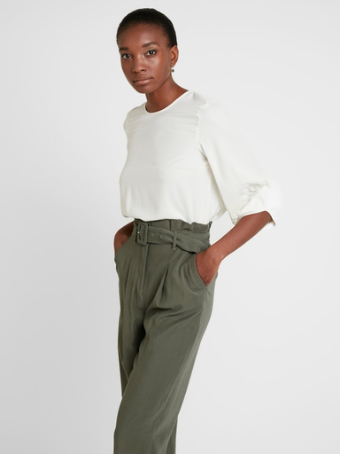
Real target Initial single-step estimateLocalization control
Initial single-step estimateLocalization control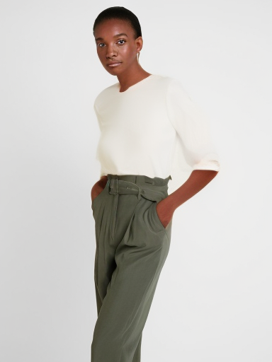
Localization + DINOCollar / neckline · mass 1.4% → 58.1% · fixed-crop distance 0.1793 → 0.1624
Exact same region in every image
 Real target cropInitial LeFFA
Real target cropInitial LeFFA
distance 0.1793Localization control
distance 0.1796Localization + DINO
distance 0.1624Where the readout points
Cyan: automatic target box. Yellow: attention-centered crop. Heat colors are normalized per map for visibility; numeric mass is the quantitative comparison.
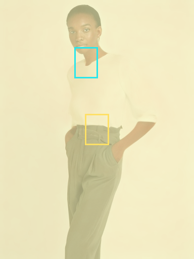
Initial LeFFA
box mass 1.4%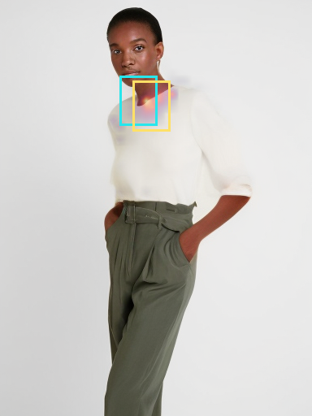
Localization control
box mass 60.7%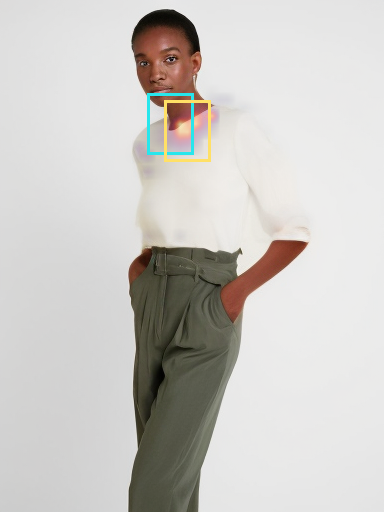
Localization + DINO
box mass 58.1%Left sleeve end · mass 1.5% → 30.2% · fixed-crop distance 0.5036 → 0.4997
Exact same region in every image
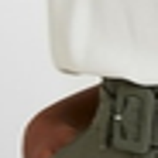
Real target crop Initial LeFFA
Initial LeFFA
distance 0.5036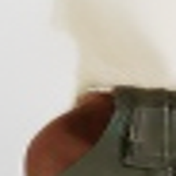
Localization control
distance 0.4972Localization + DINO
distance 0.4997Where the readout points
Cyan: automatic target box. Yellow: attention-centered crop. Heat colors are normalized per map for visibility; numeric mass is the quantitative comparison.
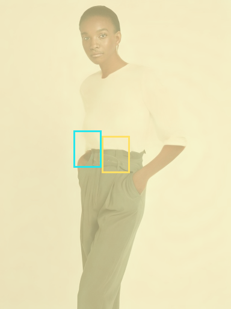
Initial LeFFA
box mass 1.5%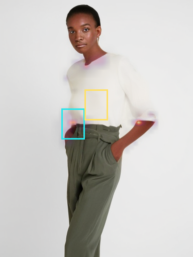
Localization control
box mass 31.1%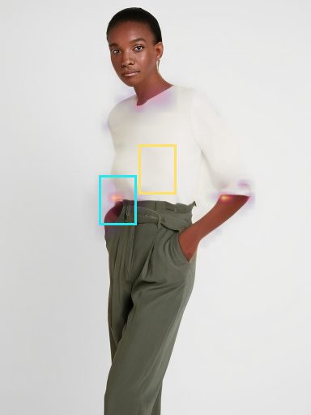
Localization + DINO
box mass 30.2%Right sleeve end · mass 1.4% → 70.2% · fixed-crop distance 0.7813 → 0.7754
Exact same region in every image
 Real target cropInitial LeFFA
Real target cropInitial LeFFA
distance 0.7813Localization control
distance 0.7473Localization + DINO
distance 0.7754Where the readout points
Cyan: automatic target box. Yellow: attention-centered crop. Heat colors are normalized per map for visibility; numeric mass is the quantitative comparison.
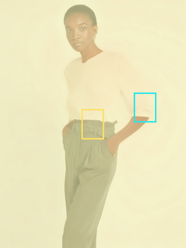
Initial LeFFA
box mass 1.4%Localization control
box mass 71.7%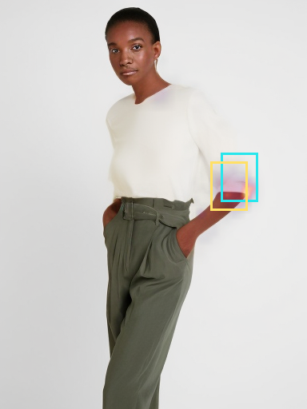
Localization + DINO
box mass 70.2%06742_00 DINO − control: +0.0048 at t=.5
 Garment condition
Garment condition Real targetInitial single-step estimateLocalization control
Real targetInitial single-step estimateLocalization control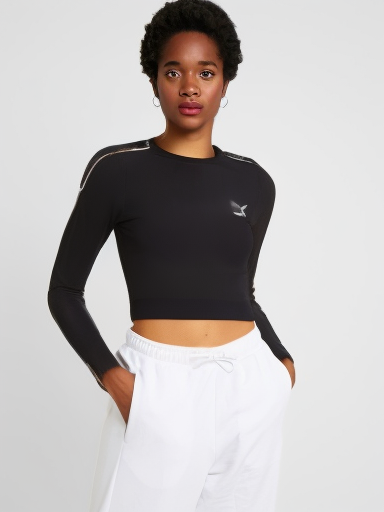
Localization + DINOCollar / neckline · mass 4.1% → 99.2% · fixed-crop distance 0.2048 → 0.2066
Exact same region in every image
Real target cropInitial LeFFA
distance 0.2048Localization control
distance 0.2035Localization + DINO
distance 0.2066
Where the readout points
Cyan: automatic target box. Yellow: attention-centered crop. Heat colors are normalized per map for visibility; numeric mass is the quantitative comparison.
Initial LeFFA
box mass 4.1%Localization control
box mass 99.4%Localization + DINO
box mass 99.2%
Left sleeve end · mass 1.5% → 59.6% · fixed-crop distance 0.3474 → 0.3542
Exact same region in every image
 Real target crop
Real target crop Initial LeFFA
Initial LeFFA
distance 0.3474Localization control
distance 0.3346Localization + DINO
distance 0.3542Where the readout points
Cyan: automatic target box. Yellow: attention-centered crop. Heat colors are normalized per map for visibility; numeric mass is the quantitative comparison.
Initial LeFFA
box mass 1.5%Localization control
box mass 59.5%Localization + DINO
box mass 59.6%
Right sleeve end · mass 1.4% → 27.2% · fixed-crop distance 0.2297 → 0.1999
Exact same region in every image
 Real target cropInitial LeFFA
Real target cropInitial LeFFA
distance 0.2297Localization control
distance 0.2081Localization + DINO
distance 0.1999Where the readout points
Cyan: automatic target box. Yellow: attention-centered crop. Heat colors are normalized per map for visibility; numeric mass is the quantitative comparison.
Initial LeFFA
box mass 1.4%Localization control
box mass 29.4%Localization + DINO
box mass 27.2%
05697_00 DINO − control: +0.0156 at t=.5
 Garment condition
Garment condition Real targetInitial single-step estimateLocalization controlLocalization + DINO
Real targetInitial single-step estimateLocalization controlLocalization + DINOCollar / neckline · mass 1.5% → 55.3% · fixed-crop distance 0.2675 → 0.2665
Exact same region in every image
Real target cropInitial LeFFA
distance 0.2675Localization control
distance 0.2509Localization + DINO
distance 0.2665
Where the readout points
Cyan: automatic target box. Yellow: attention-centered crop. Heat colors are normalized per map for visibility; numeric mass is the quantitative comparison.
Initial LeFFA
box mass 1.5%Localization control
box mass 56.1%Localization + DINO
box mass 55.3%
Evidence & reproducibility
Complete result · Real gradient verification · Run provenance · Paired image statistics · Source code · Vector localization plot · Vector DINO plot